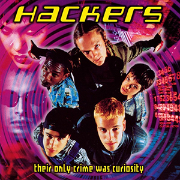
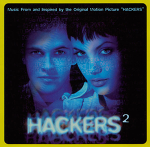
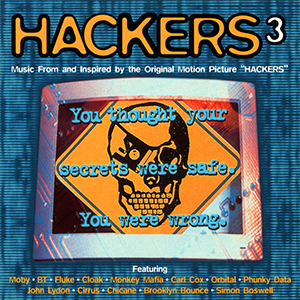

After the movie soundtrack, there were 2 additional soundtracks released with music inspired from the movie.
Source: https://www.discogs.com/search/?q=hackers&type=all
Source: https://en.wikipedia.org/wiki/Hackers_(film)
|
 First Soundtrack |
Hackers: Their Only Crime Was Curiosity: Original Motion Picture Soundtrack
"Original Bedroom Rockers" – Kruder & Dorfmeister
"Cowgirl" – Underworld
"Voodoo People" – The Prodigy
"Open Up" – Leftfield (featuring John Lydon)
"Phoebus Apollo" – Carl Cox
"The Joker" – Josh Abrahams
"Halcyon + On + On" – Orbital
"Communicate" (Headquake Hazy Cloud Mix) – Plastico
"One Love" – The Prodigy
"Connected" – Stereo MCs
"Eyes, Lips, Body" (Mekon Vocal Mix) – Ramshackle
"Good Grief" – Urban Dance Squad
"Richest Junkie Still Alive" (Sank Remix) – Machines of Loving Grace
"Heaven Knows" – Squeeze
|
|
 Second Soundtrack |
Hackers²: Music From and Inspired by the Original Motion Picture "Hackers"
"Firestarter" (Empirion mix) – The Prodigy
"Toxygene" – The Orb
"Little Wonder" (Danny Saber Dance Mix) – David Bowie
"Fire" – Scooter
"Narcotic Influence 2" – Empirion
"Remember" – BT
"Go" – Moby
"Inspection" (Check One) – Leftfield
"Cherry Pie" – Underworld
"To Be Loved" (Disco Citizens R&D Edit) [Mix] – Luce Drayton
"Speed Freak" (Moby Remix) – Orbital
"Get Ready to Bounce" (Radio Attack) – Brooklyn Bounce
"Offshore" (Disco Citizens Edit) – Chicane
"Original" – Leftfield
|
|
 Third Soundtrack |
Hackers³: Music From and Inspired by the Original Motion Picture "Hackers"
"Why Can't It Stop" – Moby
"Godspeed" (BT Edit Mix) – BT
"Absurd" (Whitewash Mix) – Fluke
"Quiet Then" – Cloak
"I Am Fresh" – Monkey Mafia
"Phuture 2000" (radio edit) – Carl Cox
"An Fhomhair" – Orbital
"Fashion" (Ian Pooley Mix) – Phunky Data
"Psychopath" (Leftfield Mix) – John Lydon
"Stop & Panic" – Cirrus
"Strong in Love" – Chicane
"Hack the Planet" – Brooklyn Bounce
"Diskette" – Simon Boswell
"Launch Divinci" – Simon Boswell
|
Source: https://www.discogs.com/search/?q=hackers&type=all
Source: https://en.wikipedia.org/wiki/Hackers_(film)